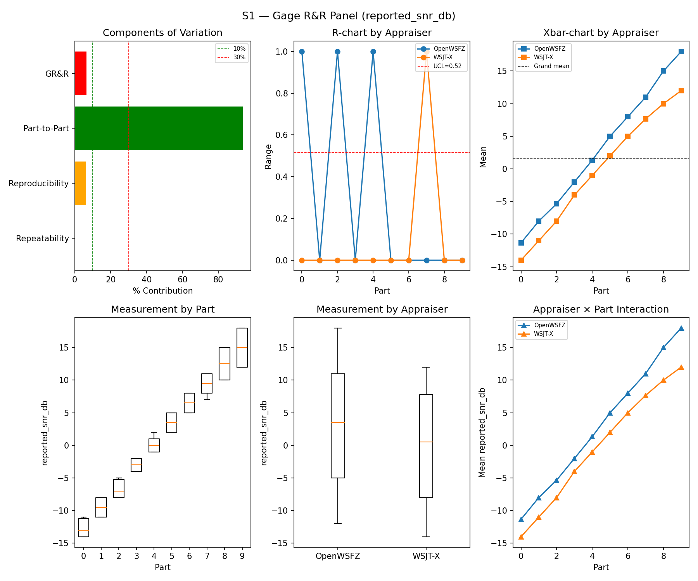
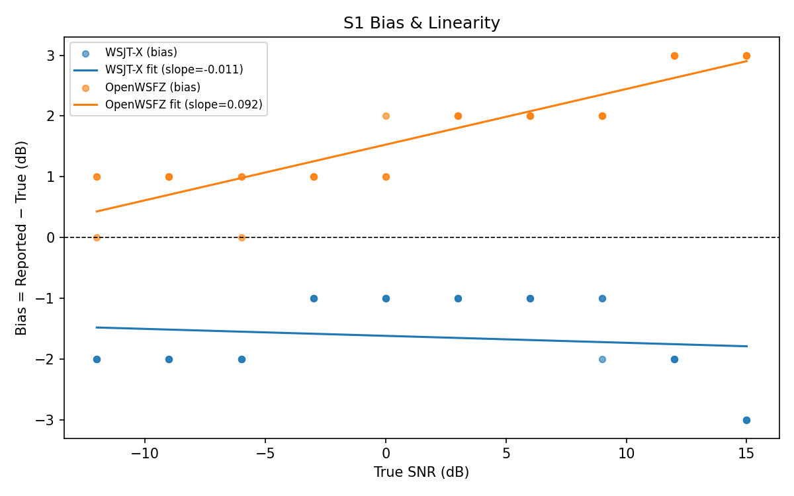
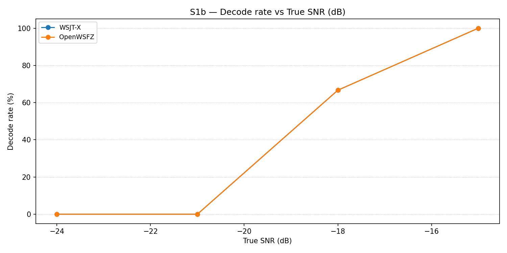
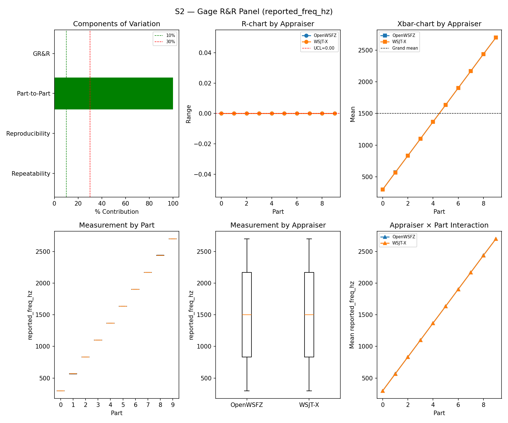
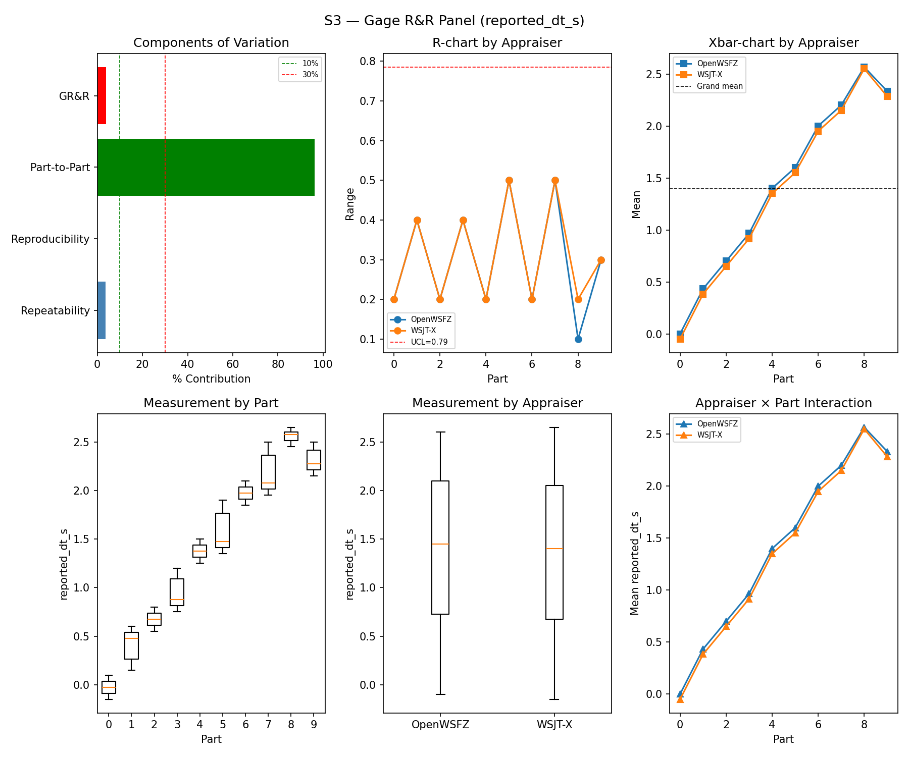
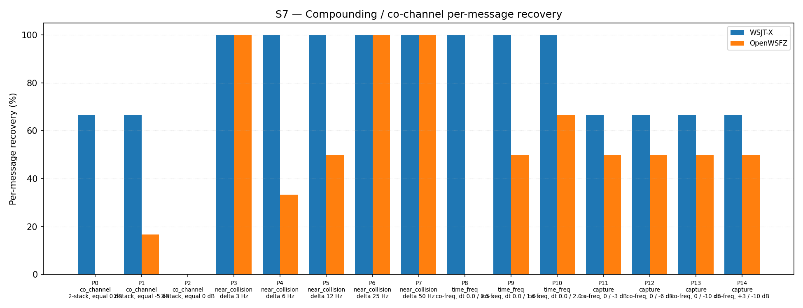

Note: This is a retroactively structured version of the original report (
report.md) for compliance with NFR-023 (five mandatory sections, STUDY-SPEC §9.0). The original report is preserved unchanged and remains the authoritative record. Section §5 (Recommendations) is omitted — this is a historical report predating NFR-023; recommendations cannot be reconstructed without anachronistic interpretation. The data, results, and verdicts are identical toreport.md; only §1 (Study Hypothesis) and §2 (Data Summary) have been added as formal framing.
Purpose: Validation run following the R&R-005 S1 ladder redesign — the immediately preceding
run (1d90e1a, 2026-06-06) had failed S1 with %GR&R = 32.0% driven by the narrow pre-R&R-005
SNR ladder producing insufficient Part-to-Part variance. This run re-executes the full S1–S7
suite (plus the newly added S1b companion) to confirm the redesigned ladder brings the
measurement system within AIAG adequacy criteria.
Hypotheses under test:
Audio chain at run time: PortAudio peak normalisation NOT yet applied (the PCM amplitude
fix was introduced in commit e4a398256f28... on 2026-06-07). Brickwall FFT noise cutoff at
4 700 Hz (single-signal and multi-signal scenarios). As a consequence, WSJT-X SNR bias is
negative (−1.63 dB) — the expected sign for pre-fix audio (see synth-change-impact.md; this
run is identified as Run A in the change-impact matrix). The high R² on OpenWSFZ bias
linearity (0.824) reflects SNR-dependent non-linearity introduced by the clipping. Both
appraisers receive identical audio; relative comparisons remain valid.
This run is the first full PASS. It establishes the pre-fix audio baseline on the correct S1 ladder design and serves as Run A in the synthesiser change impact study.
| Field | Value |
|---|---|
| Run date | 2026-06-06 |
| OpenWSFZ SHA (original) | 6bab388c8c14289e393bcb531cee1280beebe2b6 |
| OpenWSFZ SHA (post-rewrite, 2026-06-12) | c1e12bf122d213e8ddf21635037f8082a37d71c5 |
| WSJT-X version | WSJT-X 2.7.0 (inferred from binary date 2025-02-04) |
| FT8_SHIM_VERSION | 20260004 |
| PCM normalisation | None (not yet implemented) |
| Noise filter | Brickwall FFT at 4 700 Hz (all scenarios; pre-Kaiser-FIR) |
| Scenarios run | S1, S1b, S2, S3, S4, S5, S7 (first run with S1b; no S8) |
| Signal source | Synthetic (GFSK encoder, Q-prefix calls per NFR-021) |
S1 measurement dimensions:
| Field | Value |
|---|---|
| SNR ladder | Redesigned R&R-005 ladder (wider range; previous narrow range caused %GR&R FAIL) |
| Trials per part | 3 |
| Appraisers | WSJT-X, OpenWSFZ (crossed design) |
Harness fixes applied at run time:
| Fix | Status |
|---|---|
| S4/S7 shared noise floor model | ✅ Applied |
| S3 DT convention correction (+0.55 s offset) | ✅ Applied |
| S1 ladder redesign (R&R-005) + S1b companion | ✅ Applied — this run validates the redesign |
| PortAudio peak normalisation | ❌ Not yet applied |
| Kaiser FIR noise filter (replaces brickwall) | ❌ Not yet applied |
Change impact context: This run corresponds to Run A in synth-change-impact.md.
The post-fix reference baseline (Run D = e4a3982, 2026-06-07) shows the effect of applying
PortAudio normalisation and Kaiser FIR to this same code base.
Open defects at run time:
| ID | Severity | Status | Description |
|---|---|---|---|
| D-001 | High | Open (S7 characterises it) | Co-channel decode gap vs WSJT-X; confirmed in first run and ongoing |
Acceptance thresholds:
| Metric | Threshold | Source |
|---|---|---|
| %GR&R (variance contribution) | < 30% | AIAG MSA |
| ndc | ≥ 5 | AIAG MSA |
| Attribute κ vs truth (S4/S5) | ≥ 0.90 (PASS) / ≥ 0.70 (conditional) | AIAG attribute study |
| False-positive rate (S5) | 0% | STUDY-SPEC §10 |
| SNR bias | ±2.0 dB (advisory at run time) | D-002 investigation |
| Component | σ² | %Contribution |
|---|---|---|
| Repeatability | 0.07 | 0.07% |
| Reproducibility | 6.12 | 6.43% |
| Part-to-Part | 88.95 | 93.50% |
| Total GR&R | 6.18 | 6.50% |
| Total | 95.13 | 100.00% |
| Metric | Value | Verdict |
|---|---|---|
| %Tolerance (GR&R) | 149.20% | PASS |
| %Study Var (GR&R) | 25.49% | — |
| ndc | 5 | PASS |

| Appraiser | Mean Bias (dB) | Slope | Intercept | R² | Verdict |
|---|---|---|---|---|---|
| WSJT-X | -1.63 | -0.011 | -1.616 | 0.023 | PASS |
| OpenWSFZ | +1.67 | 0.092 | 1.529 | 0.824 | PASS |
WSJT-X negative bias and OpenWSFZ high R² (0.824) are signatures of PortAudio clipping
distortion in pre-fix audio. This is the expected state for Run A. See synth-change-impact.md.

Decode rate at SNRs below the main S1 ladder (−24 to −15 dB). First execution of S1b. Informational — no AIAG threshold.
| Part | True SNR (dB) | WSJT-X decoded | WSJT-X rate | OpenWSFZ decoded | OpenWSFZ rate |
|---|---|---|---|---|---|
| P0 | -24.00 | 0/3 | 0.00% | 0/3 | 0.00% |
| P1 | -21.00 | 0/3 | 0.00% | 0/3 | 0.00% |
| P2 | -18.00 | 2/3 | 66.67% | 2/3 | 66.67% |
| P3 | -15.00 | 3/3 | 100.00% | 3/3 | 100.00% |
Overall decode rate — WSJT-X: 41.67% OpenWSFZ: 41.67%
Both appraisers agree exactly at this ladder; no decode gap at low SNR for isolated signals.

| Component | σ² | %Contribution |
|---|---|---|
| Repeatability | 0.00 | 0.00% |
| Reproducibility | 0.60 | 0.00% |
| Part-to-Part | 652741.87 | 100.00% |
| Total GR&R | 0.60 | 0.00% |
| Total | 652742.47 | 100.00% |
| Metric | Value | Verdict |
|---|---|---|
| %Tolerance (GR&R) | 58.09% | PASS |
| %Study Var (GR&R) | 0.10% | — |
| ndc | 1470 | PASS |

| Component | σ² | %Contribution |
|---|---|---|
| Repeatability | 0.03 | 3.73% |
| Reproducibility | 0.00 | 0.14% |
| Part-to-Part | 0.76 | 96.13% |
| Total GR&R | 0.03 | 3.87% |
| Total | 0.80 | 100.00% |
| Metric | Value | Verdict |
|---|---|---|
| %Tolerance (GR&R) | 263.04% | PASS |
| %Study Var (GR&R) | 19.67% | — |
| ndc | 7 | PASS |

WSJT-X DT correction applied. A +0.55 s offset was added to WSJT-X
reported_dt_sbefore ANOVA to remove the ≈ −0.55 s convention difference between WSJT-X (DT relative to nominal FT8 TX start) and the harness (DT relative to UTC slot boundary). See R&R-003 (GitHub #1).
κ computed over pooled S4/S5 population. κ verdicts advisory — §10 attribute gate pending Captain ratification.
| Appraiser | TP | FN | FP | TN | Recovery | Specificity |
|---|---|---|---|---|---|---|
| WSJT-X | 15 | 0 | 0 | 12 | 100.00% | 100.00% |
| OpenWSFZ | 15 | 0 | 0 | 12 | 100.00% | 100.00% |
| Pair | κ | 95% CI | Verdict (advisory) |
|---|---|---|---|
| OpenWSFZ_vs_truth | 1.000 | [1.00, 1.00] | PASS |
| WSJT-X_vs_truth | 1.000 | [1.00, 1.00] | PASS |
| between_appraisers | 1.000 | — | PASS |
| Appraiser | Consistent groups |
|---|---|
| WSJT-X | 100.00% |
| OpenWSFZ | 100.00% |
| Appraiser | FP rate | Verdict |
|---|---|---|
| WSJT-X | 0.00% | PASS |
| OpenWSFZ | 0.00% | PASS |
Informational — no AIAG threshold. D-001 characterisation.
| Overlap family | WSJT-X | OpenWSFZ |
|---|---|---|
| capture | 66.67% | 50.00% |
| co_channel | 38.10% | 4.76% |
| near_collision | 100.00% | 76.67% |
| time_freq | 100.00% | 38.89% |
| all | 77.42% | 46.24% |
| Signal | WSJT-X | OpenWSFZ |
|---|---|---|
| strong | 100.00% | 100.00% |
| weak | 33.33% | 0.00% |
Between-app per-signal agreement: 68.82%
| Part | Family | Condition | WSJT-X | OpenWSFZ |
|---|---|---|---|---|
| P0 | co_channel | 2-stack, equal 0 dB | 4/6 | 0/6 |
| P1 | co_channel | 2-stack, equal -5 dB | 4/6 | 1/6 |
| P2 | co_channel | 3-stack, equal 0 dB | 0/9 | 0/9 |
| P3 | near_collision | delta 3 Hz | 6/6 | 6/6 |
| P4 | near_collision | delta 6 Hz | 6/6 | 2/6 |
| P5 | near_collision | delta 12 Hz | 6/6 | 3/6 |
| P6 | near_collision | delta 25 Hz | 6/6 | 6/6 |
| P7 | near_collision | delta 50 Hz | 6/6 | 6/6 |
| P8 | time_freq | co-freq, dt 0.0 / 0.5 s | 6/6 | 0/6 |
| P9 | time_freq | co-freq, dt 0.0 / 1.0 s | 6/6 | 3/6 |
| P10 | time_freq | co-freq, dt 0.0 / 2.0 s | 6/6 | 4/6 |
| P11 | capture | co-freq, 0 / -3 dB | 4/6 | 3/6 |
| P12 | capture | co-freq, 0 / -6 dB | 4/6 | 3/6 |
| P13 | capture | co-freq, 0 / -10 dB | 4/6 | 3/6 |
| P14 | capture | co-freq, +3 / -10 dB | 4/6 | 3/6 |

| Metric | Scope | Value | Verdict |
|---|---|---|---|
| %GR&R | S1 | 6.5% | PASS |
| ndc | S1 | 5 | PASS |
| %GR&R | S2 | 0.0% | PASS |
| ndc | S2 | 1470 | PASS |
| %GR&R | S3 | 3.9% | PASS |
| ndc | S3 | 7 | PASS |
| Kappa (advisory) | WSJT-X_vs_truth | 1.000 | PASS |
| Kappa (advisory) | OpenWSFZ_vs_truth | 1.000 | PASS |
| Kappa (advisory) | between_appraisers | 1.000 | PASS |
| FP rate | S5/WSJT-X | 0.0% | PASS |
| FP rate | S5/OpenWSFZ | 0.0% | PASS |
| SNR bias | S1/WSJT-X | -1.63 dB | PASS |
| SNR bias | S1/OpenWSFZ | +1.67 dB | PASS |
Overall verdict: PASS
This is the first full PASS. All AIAG-gated metrics are within acceptance criteria. The R&R-005
S1 ladder redesign resolved the %GR&R FAIL observed in the preceding run (1d90e1a).
e4a3982, 2026-06-07). See synth-change-impact.md.Omitted. This study was conducted on 2026-06-06, predating NFR-023 (five-section report structure requirement, introduced 2026-06-11). Recommendations were not recorded at run time and cannot be accurately reconstructed without risk of anachronistic interpretation.
For actions taken subsequent to this run, refer to: - PortAudio clipping fix + Kaiser FIR: Applied 2026-06-07 in the S1–S8 reference baseline run (
e4a3982). The post-fix baselines for all scenarios are documented in2026-06-07-4b3a4ca/report-v2.md. - D-001 (co-channel gap — open): GitHub #3. - D-002 (SNR bias — resolved): Shim constant −26.5 dB, validated 2026-06-11; GitHub #8 closed. Note: +1.67 dB OpenWSFZ bias in this run is distorted by pre-fix audio and does not represent the true post-fix state.